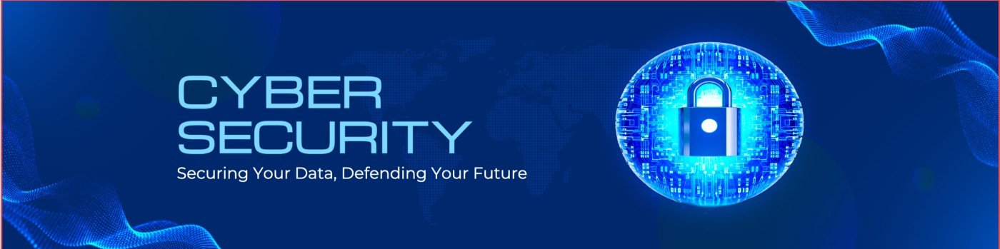

My Interests in CyberSecurity
First, What is CyberSecurity? Cybersecurity is a field within computing focused on protecting systems, networks, and data. It is built upon the principles of Confidentiality, Integrity, and Availability (the CIA Triad). It involves both defensive measures to prevent attacks and offensive techniques to identify vulnerabilities before malicious actors exploit them.
Futhermore, My interest in cybersecurity began at a young age, driven by a fascination with intelligence, investigation, and problem-solving. Over time, this evolved into a focused academic pursuit in cybersecurity, where I aim to develop both offensive and defensive security skills. I want to be able to get the knowledege of hacking and protecting precious data from being taken.

Tips in protecting your data as a CyberSecurity student
To make sure your data is well maintained and not affected, you also have a role to play because cybersecutiy begiin with you and I. so here are few ordered tips i suggest would help in securing your data.
- Secure your email account (strong unique password + MFA).
- Use a password manager and stop reusing passwords.
- Enable MFA on all critical accounts.
- Keep your devices and software updated (patching).
- Encrypt your devices (BitLocker / FileVault).
- Create regular backups (3-2-1 rule).
- Learn to detect and avoid phishing attacks.
- Separate critical accounts (email segmentation).
- Lock down social media privacy settings.
- Monitor for data breaches (e.g., Have I Been Pwned).
- Be strict about app installs and browser extensions.
- Use a VPN on untrusted networks.